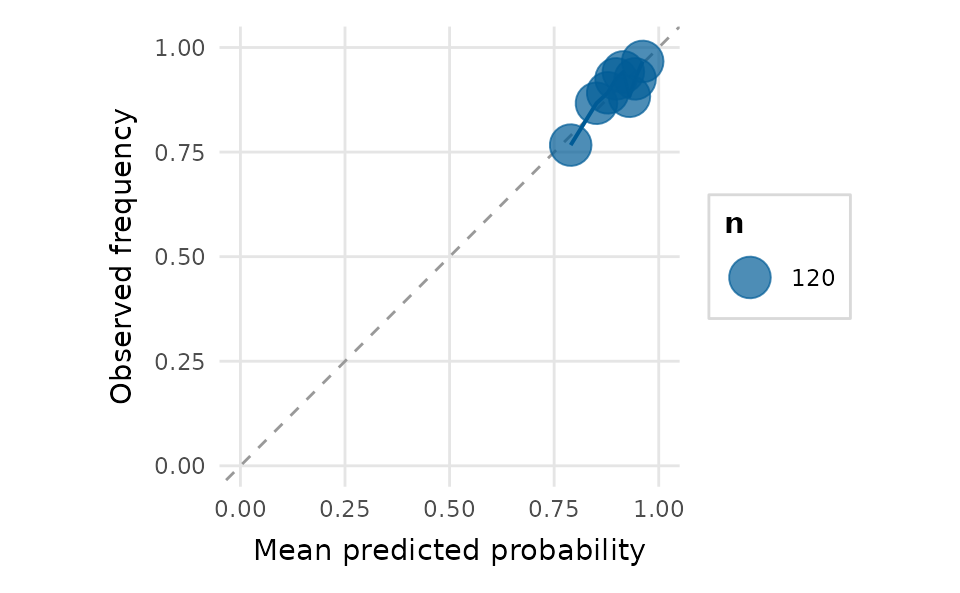

Diagnostics, classification and uncertainty
Source:vignettes/diagnostics-and-uncertainty.Rmd
diagnostics-and-uncertainty.RmdRegression diagnostics
residual_diagnostics_plot() assembles the classic panel;
influence_plot() and qq_plot() zoom in on
particular checks.
fit <- lm(yield ~ rainfall + fertilizer + soil_ph, data = crop_yield)
residual_diagnostics_plot(fit, title = "Crop-yield model")
influence_plot(fit)
The bubble area is Cook’s distance, the standard measure of an observation’s influence on the fitted coefficients (Cook, 1977).
vif_plot() checks for multicollinearity among the
predictors:
vif_plot(fit)
Classification
For binary classifiers, depictr provides an ROC curve (with AUC), a
calibration plot and a confusion-matrix heatmap. Each reads a binomial
glm directly, or a pair of vectors.
gfit <- glm(accuracy ~ word_frequency + RT + condition,
data = lexical_decision, family = binomial)
roc_curve_plot(gfit)
When the positive class is rare, the precision-recall curve is more informative than the ROC curve:
pr_curve_plot(gfit)
For ranking and targeting tasks, the cumulative gains and lift charts show how many positive cases are captured as more of the score-ordered population is targeted:
gain_plot(gfit)
lift_plot(gfit)
calibration_plot(gfit, bins = 8)
confusion_matrix_plot(gfit, threshold = 0.5, normalize = "row")
Uncertainty
posterior_plot() summarises draws (posterior, bootstrap,
simulation) as a point with nested intervals.
set.seed(2)
draws <- data.frame(
stress = rnorm(2000, -0.45, 0.08),
sleep = rnorm(2000, 0.25, 0.06),
exercise = rnorm(2000, 0.15, 0.05)
)
posterior_plot(draws, title = "Posterior estimates")
Power curves
power_curve_plot() reads a
simr::powerCurve() object or a tidy data frame, so a slow
power simulation does not have to be re-run to redraw it.
pc <- data.frame(nlevels = seq(10, 70, by = 10),
mean = c(0.16, 0.31, 0.48, 0.63, 0.78, 0.88, 0.94),
lower = c(0.09, 0.23, 0.39, 0.54, 0.70, 0.82, 0.89),
upper = c(0.25, 0.40, 0.57, 0.71, 0.85, 0.93, 0.97))
power_curve_plot(pc, x_lab = "Number of participants",
title = "Power for the condition effect")
Composing and saving
Combine any of these with arrange_plots() and save with
save_plot():
arrange_plots(
qq_plot(fit), influence_plot(fit),
ncol = 2, title = "Diagnostics", tag_levels = "A"
)